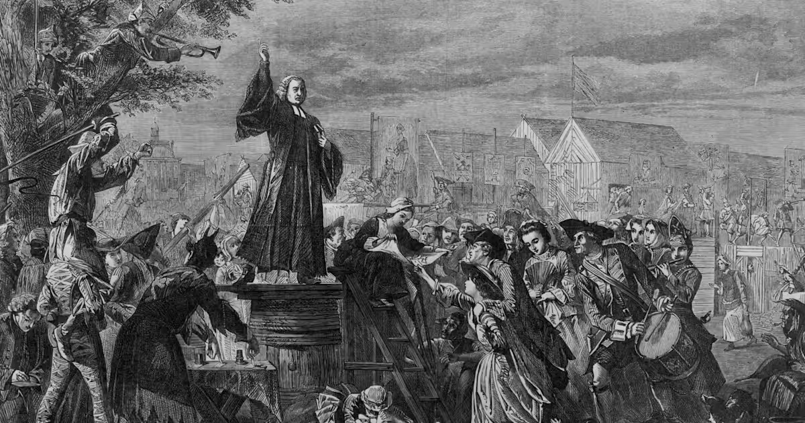
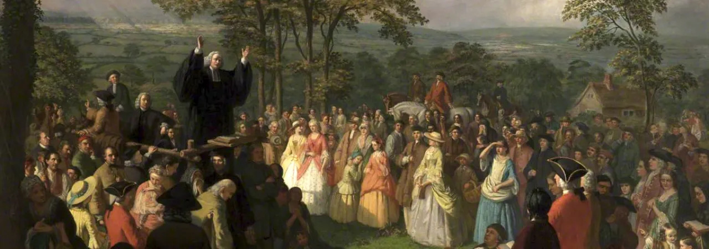

The Second Great Awakening was a religious revival movement that spread across America through emotional preaching and camp meetings.

Preachers traveled from town to town encouraging people to experience personal salvation.